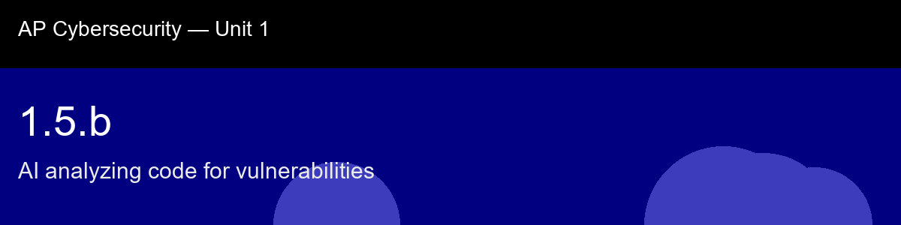

1.5.b, AI analyzing code for vulnerabilities
Before class today. Writing software that is both functional and secure is hard. Developers focus on making code work;
security analysis is often an afterthought. For decades, the answer was manual code review, a
senior engineer reading every line looking for bugs.
The intuition to hold onto: Static analysis is worth understanding by contrast with what it isn't: it never runs your code, it just pattern-matches the text against a list of historically dangerous constructs. That's simultaneously its superpower (catches bugs before a single test case ever executes, scales to millions of lines in milliseconds) and its ceiling (a pickle.loads call is flagged the same way whether it's processing untrusted user uploads or a trusted internal config file, the tool has no idea which). The six patterns here aren't an arbitrary list to memorize; each one is a place where a string can become code or a choice can become a weakness (MD5), and once you see that unifying shape, you'll start recognizing the pattern in code you've never seen flagged before.
A myth worth busting before we start: "Static analysis finds all vulnerabilities." → Static analysis finds known patterns; novel logic bugs, authentication flaws, and business-logic errors usually require human review or dynamic testing.
Today's goal: Explain how AI-powered static analysis scans source code for known vulnerability patterns, identify specific risky constructs in Python code, and articulate why each flagged pattern creates a security risk.
Handout: pre-lecture-handout.docx.

## 1.5.b, AI analyzing code for vulnerabilities
**Before class today.** Writing software that is both functional and secure is hard. Developers focus on making code work;
security analysis is often an afterthought. For decades, the answer was manual code review, a
senior engineer reading every line looking for bugs.
**The intuition to hold onto:** Static analysis is worth understanding by contrast with what it *isn't*: it never runs your code, it just pattern-matches the text against a list of historically dangerous constructs. That's simultaneously its superpower (catches bugs before a single test case ever executes, scales to millions of lines in milliseconds) and its ceiling (a `pickle.loads` call is flagged the same way whether it's processing untrusted user uploads or a trusted internal config file, the tool has no idea which). The six patterns here aren't an arbitrary list to memorize; each one is a place where a *string* can become *code* or a *choice* can become a *weakness* (MD5), and once you see that unifying shape, you'll start recognizing the pattern in code you've never seen flagged before.
**A myth worth busting before we start:** "Static analysis finds all vulnerabilities." → Static analysis finds known patterns; novel logic bugs, authentication flaws, and business-logic errors usually require human review or dynamic testing.
**Today's goal:** Explain how AI-powered static analysis scans source code for known vulnerability patterns, identify specific risky constructs in Python code, and articulate why each flagged pattern creates a security risk.
Handout: `pre-lecture-handout.docx`.